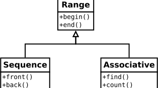

Concepts
Czirkos Zoltán · 2019.03.19.
Kitekintés: a concept nyelvi elem, amely a következő C++ szabvány, a C++20 része lesz.
Serializable, Comparable, Iterable – ezek az interfészek nagyon sok OOP nyelvben akár
beépítetten megjelennek. C++-ban azonban gyakran nem tűnik helyénvalónak ilyen osztályokat definiálni, ilyenekből származtatni a
konkrét osztályainkat. Miért akarnánk Serializable interfészből származtatni, miért nem használjuk csak simán a kiíró
operátort? Miért akarnánk egy tárolóban Serializable* pointereket tárolni, olyan objektumokra, amelyekről aztán azt se
tudjuk, hogy mik azok, és elárasztják a dynamic_cast-ok a kódunkat? Érezzük, hogy a nyelv ellenkezik. Ezt
template-ekkel kell csinálni, azaz fordítási idejű polimorfizmussal, nem pedig klasszikus örökléssel, futási idejű
polimorfizmussal.
A C++20-ban egy új nyelvi elemet fognak bevezetni, amelyik épp ilyen jellegű fogalmakat hivatott kifejezni a
template-ekre a forráskódban is. A requires és a concept kulcsszavakkal sablon függvényekre,
sablon osztályokra fejezhetjük majd ki, milyen elvárásaink vannak a példányosító típusokkal kapcsolatban. Legyen
szerializálható a << és >> operátorokkal, legyen összehasonlítható az == és
!= operátorokkal, és így tovább. Ezek az elvárások amúgy is ott vannak, hiszen ha hiányzik egy operátor, fordítási
hibát fogunk kapni – de ha a fordító érti, hogy épp mit csinálunk, akkor hasznosabb hibaüzenetet tud majd adni. A sablon
metaprogramozás ugyanis egyik legnagyobb problémája az, hogy trükkökből áll az egész kódunk.
A concept nevű nyelvi eszközön – aminek ez a jegyzet nem próbál meg magyar nevet adni – már egy bő évtizede dolgoznak, azonban a szabványosítási bizottság végül mégsem szavazta be a C++17 szabványba a specifikációt. Legtöbben úgy érezték, várni kell egy kicsit, amíg több tapasztalat gyűlik össze. 2020-ra viszont már bekerült ez a nyelvbe.
Ez az előadás felvezetésképp néhány ismert kódrészlettel, és azoknak szokványos sablon metaprogramozós megoldásával indít. Majd a leendő nyelvi eszköz bemutatása után megmutatja azt, mennyire leegyszerűsödik ezek kódolása.
Alert: science fiction!
Minden, ami ebben az írásban szerepel, egyelőre még messze nem elterjedt az iparban, nincs kitaposott út.
A jegyzetben bemutatott példák, ötletek nagyrészt az irodalomjegyzékben szereplő írásokból származnak; főként Bjarne Stroustrup és Andrew Sutton cikkeiből.
Sok sablon metaprogramozással kapcsolatos probléma bemutatható iterátorokon. Nézzünk egy ilyet bevezetésképp!
Tudjuk, hogy nem minden tárolóban ugrálhatunk szabadon ide-oda. Egy vektorban bármekkora ugrás megtehető O(1) időben, míg egy láncolt listában előre-hátra lépni csak egyesével, emiatt O(n) időben lehet. Nyelvileg ez úgy jelenik meg, hogy a vektor iterátoránál értelmezhető az iter + int alakú kifejezés (random access iterator), míg a listánál csak az iter++ operátor létezik (forward iterator).
Az std::advance(iterator &, int) függvény, melynek feladata egy iterátor léptetése, éppen ez alapján csinál esetszétválasztást. Véletlen elérésű iterátorokra konstans a futási ideje, a lépés nagyságától függetlenül. Ha nincs += operátor, akkor viszont lineáris a futási idő.
Nézzük meg ennek egy lehetséges megvalósítását! A problémát, és a klasszikus megoldását ismerjük: viselkedésleíró osztályt kell használni (trait class), és egy segédfüggvényt, amely az iterátor tulajdonságai alapján kiválasztja a megfelelő algoritmust:
template <typename IT>
void advance(IT & it, int n, std::random_access_iterator_tag) {
it += n;
}
template <typename IT>
void advance(IT & it, int n, std::forward_iterator_tag) {
for (int i = 0; i < n; ++i)
++it;
}
template <typename IT>
void advance(IT & it, int n) {
using iter_categ = typename std::iterator_traits<IT>::iterator_category;
advance(it, n, iter_categ());
}A típus tulajdonsága: van-e olyan operátora?
A tulajdonság lekérdezésének új elvű megvalósításához ismerkedjünk meg egy új segédeszközzel, a C++17-es std::void_t-vel. Ez egy sablon típus, amelynek a definíciója mindössze ennyi:
template <typename...>
using void_t = void;Ez önmagában eléggé haszontalannak tűnik. Bármivel példányosítjuk, void-ot kapunk: a void_t<> is void, a void_t<int, double> is void, bármilyen sablonparaméterek esetén void. A létezése egyfajta történelmi baleset: véletlenül jöttek rá, hogy a nyelv szabályai miatt igen meglepő dolgokra képes ez a segédtípus. A sablonparamétereket ugyanis adhatják decltype-os kifejezések, és ezért SFINAE-s környezetekben nagyon jól használható.
Tegyük fel, hogy kíváncsiak vagyunk egy bizonyos típusnál arra, hogy használható-e rajta a valami + int művelet! Ezt a void_t segítségével így kell csinálni:
template <typename T, typename SFINAE = void>
struct has_plus_operator : std::false_type {};
template <typename T>
struct has_plus_operator<T, std::void_t<decltype(T()+0)>> : std::true_type {};
int main() {
std::cout << has_plus_operator<std::list<int>::iterator>::value;
std::cout << has_plus_operator<std::vector<int>::iterator>::value;
}0 1
Hogy működik ez a kód? Mindkét példányosítás esetén a fordító megvizsgálja mind a két osztály deklarációját, hogy eldöntse, az alap sablont (fenti), vagy a specializációt (lenti) kell használnia.
- Az első esetben egy lista iterátorával kíséreljük meg a példányosítást. Ilyenkor a
T()+0kifejezés érvénytelen, mivel ez nem véletlen elérésű iterátor, nem adható hozzá egy egész szám. Ezért a specializáció nem használható (SFINAE szabály miatt, a sablonparaméter neve is erre hívja fel a figyelmet), marad helyette az osztály alapdefiníciója. Az pedig azstd::false_type-ból öröklődve hamisat ad. - A második esetben viszont egy vektor iterátora a vizsgált típus. Ebben az esetben a
T()+0kifejezés érvényes, annak típusa lesz avoid_tsablonparamétere adecltypemiatt. Így atrue_type-ból öröklődő specializáció is használható,<vektor_iterátora, void>sablonparaméterekkel példányosítva. Bár ez pontosan megegyezik az alapdefiníció paramétereivel (SFINAE = voidaz alapértelmezett), mégis ilyenkor a specializációnak van elsőbbsége. Szimplán azért, mert specializáció.
Eddig van egy metafüggvényünk, amelyik az iterátorról meg tudja mondani, biztosít-e véletlen elérést vagy nem. Folytassuk ezen az úton! Tegyük fel, hogy ha van az iterátornak + int művelete, akkor van += int művelete is. (Később látni fogjuk, ez jogos feltételezés.) A metafüggvény értékének felhasználásával létrehozhatunk két advance() függvényt, amelyeket egymást kölcsönösen kizáró módon engedünk csak példányosodni.
Ez egy újabb SFINAE lesz. Hogy a szokásos std::enable_if-es történetet kicsit lerövidítjük, bevezetünk egy új típust, az enable_if_t-t:
template <bool B, class T = void>
using enable_if_t = typename std::enable_if<B, T>::type;Így nem kell majd kiírni mindig a typename-et és a ::type-ot. Ugyanez létezik egyébként szabványosan is, C++14 óta. Végül az eddigi segédfüggvényre egyáltalán nincs szükségünk:
template <typename IT>
void advance(IT & it, int n, std::enable_if_t<has_plus_operator<IT>::value> * = nullptr) {
std::cout << "+= advance" << std::endl;
it += n;
}
template <typename IT>
void advance(IT & it, int n, std::enable_if_t<!has_plus_operator<IT>::value> * = nullptr) {
std::cout << "for ++ advance" << std::endl;
for (int i = 0; i < n; ++i)
++it;
}
int main() {
std::vector<int> v = { 1, 2, 3 };
auto vi = v.begin();
advance(vi, 2);
std::list<int> l = { 1, 2, 3 };
auto li = l.begin();
advance(li, 2);
}És kész.
Esetszétválasztás: ha van olyan operátora...
Nézzünk meg a folytatást, a még C++17-esebb megoldást! A fenti kódban + operátor lekérdezése viszonylag egyszerű volt, de az enable_if-es rész még mindig elég fájdalmasan néz ki. Ha tudjuk előre, hogy csak a fenti két esetet kell szétválasztani (van/nincs += operátor), akkor leginkább ezt szeretnénk írni:
template <typename IT>
void advance(IT & it, int n) {
if (has_plus_operator<IT>::value) {
it += n;
} else {
for (int i = 0; i < n; ++i)
++it;
}
}De mint ismeretes, ez így nem működik; hiába fordítási idejű konstans alapján ágaztatjuk el vezérlést, a fordító mégis mindkét ágat meg fogja próbálni lefordítani. C++17 óta azonban nem: az if constexpr kulcsszópárossal jelezhetjük azt, hogy egy elágazás feltételét fordítási időben ki kell tudni értékelni. És itt jön a lényeg: ha a feltétel értékét már fordítási időben ismerjük, akkor már ilyenkor tudjuk azt is, a vezérlés melyik ágra fog kerülni. A másik ág pedig teljesen elhagyható: még akár hibás is lehet, legalábbis a hiányzó operátor erejéig. Az esetszétválasztás tehát:
template <typename IT>
void advance(IT & it, int n) {
if constexpr (has_plus_operator<IT>::value) { // if constexpr
it += n;
} else {
for (int i = 0; i < n; ++i)
++it;
}
}Tanulságok
A fenti feladatban két problémát kellett megoldani:
- Le kellett tudni kérdezni egy típusról annak valamely tulajdonságát, amelyik amúgy a fordító számára amúgy is ismert volt.
- Esetszétválasztást kellett tudni csinálni a típus valamely tulajdonsága alapján.
Mindkettő olvashatóbb formában megoldható az új eszközökkel, mint ahogyan a régebben bemutatottakkal lehetett volna. De
elégedettek nem lehetünk igazán. A void_t-s megoldás továbbra is egy trükk. Bár viszonylag olvasható, mégis azt
érezzük, jobb lenne az ilyen tulajdonságok lekérdezéséhez nyelvi támogatás.
Az esetszétválasztás megvalósításához az if constexpr is nagyon frappáns megoldás. De azt észre kell vennünk,
hogy egyfajta type switch lévén tervezési szempontból rosszabb, mint az overloados változat. Jelenleg
csak 1-2 soros algoritmusaink vannak, és azokból is csak kettő (az iterátorok léptetése), így elférnek ezek egy függvényben. De ha
kettőnél több típusra kellene elkészíteni a függvényt, és összetettebb algoritmusokról lenne szó, ez kényelmetlenné válhatna.
Főleg, hogy egy új típus hozzáadásánál egyszerűbb lenne egy új overloadot írni, mint egy meglévő függvényt kiegészíteni.
Ideális esetben a fordító úgyis választani fog közülük, nem kellene a mi feladatunk legyen megírni a kiválasztás logikáját.
Tudjuk, hogy a sablonok a C++ kódban az ún. duck typing típusszemlélettel működnek: ami úszik és hápog, az kacsa. Ha szeretnénk egy olyan függvényt írni, ami bármit ki tud írni a képernyőre, ahhoz sablont írunk:
template <typename T>
void print(T obj) {
std::cout << obj;
}Bármilyen típusú objektum, amely esetén értelmezhető egy ostream << obj kifejezés, használható a fenti függvény paramétereként – szoktuk mondani. De ez a típusszemlélet fájdalmas is tud lenni, amikor elrontjuk a sablon kódot. Tegyük fel, hogy ki szeretnénk írni egy nem szerializálható objektumot. Legyen ez most egy egészekből álló vektor, amelyről akár feltételezhetnénk is, hogy van kiíró operátora:
#include <iostream>
#include <vector>
template <typename T>
void print(T obj) {
std::cout << obj; // itt derül ki a hiba
}
int main() {
std::vector<int> v = { 1, 2, 3 };
print(v); // ez a hibás hívás
}Erre természetesen fordítási hibát kapunk. Na de mennyit?! GNU g++ 7.0.1-es verzióval próbálva összesen 230 sort:
$ g++ -std=c++17 print.cpp 2>&1 | wc -l 230
Pedig ez egyetlen egy apró hiba volt. Komolyabb sablon kódoknál, rekurzív példányosításoknál még rosszabb a helyzet.
Ha valahogyan tudnánk jelezni a fordítónak, hogy itt az std::cout << obj kifejezésbe behelyettesíthető paramétert várunk, akkor már a hívás helyén jelezni tudná a hibát. A hibaüzenet pedig nem arról szólna, hogy „nincs ilyen operátor, mellesleg ilyeneket találtam: ... ” (és bumm, egy 100 elemű lista mindenféle szabványos fejlécfájlok belsejébe hivatkozással), hanem arról, hogy „a paraméter szerializálható objektum kellene legyen”.
Erre valók a concept-ek. A concept olyasmi, mint egy interfész az OOP-ben, csak sablonokra értelmezve. A függvény paramétere legyen szerializálható, ezt így írjuk:
template <typename T>
requires Serializable<T>() // concept
void print(T obj) {
std::cout << obj;
}Ha így teszünk, a 230 soros hibaüzenet 13 sorra rövidül, amikből a lényeg ez:
$ g++ -fconcepts -std=c++17 print.cpp print.cpp: In function ‘int main()’: print.cpp:17:20: error: cannot call function ‘void print(T) [with T = std::vector<int>]’ [...] print.cpp:12:6: note: constraints not satisfied [...] print.cpp:4:14: note: the required expression ‘(stream << obj)’ would be ill-formed
Így már érthetőbb. Ez tényleg azt mondja, a main()-ben lévő print() hívás helytelen, mert a paraméterre adott megkötések (constraint) nem teljesíthetők – a stream << obj alakú kifejezés hibás lenne.
A fenti kódban használt Serializable egy ún. concept. Ez egy kifejezetten erre a célra létrehozott függvény, aminek természetesen fordítási időben kiértékelhetőnek kell lennie. A sablonparamétere a vizsgálandó típus, amelyről tudni szeretnénk, szerializálható-e vagy nem; például Serializable<int>() igazat kell adjon, Serializable<std::vector<int>>() pedig hamisat. Ezt az értéket fogja megvizsgálni a fordító a függvényhívás lefordítása előtt a requires jelzés hatására. Hamis érték esetén meg sem próbálkozik majd a függvénytörzs fordításával, mert a programozó jelezte, hogy amúgy is értelmetlen lenne. Így tűnik el a 230 sornyi hibaüzenet, és lesz helyette a néhány sornyi könnyen érthető jelzés.
A Serializable függvény definíciója pedig a következő:
template <typename T>
concept bool Serializable() {
return requires (std::ostream & os, std::istream & is, T obj) {
{ os << obj } -> std::ostream &;
{ is >> obj } -> std::istream &;
};
}A fenti függvényben több új nyelvi elem is van, amelyeket a következő szakasz részletesebben is kifejt majd. A két legfontosabb a concept és a requires kulcsszavak megjelenése.
A concept kulcsszó jelöli meg azokat a metafüggvényeket, amelyeket a fordító a sablonok példányosításánál használ majd az interfészek ellenőrzésére. Ennek paramétere igazából a T típus, visszatérési értéke pedig értelemszerűen a bool.
A requires kifejezés (requires expression) a requires kulcsszónál kezdődik, és a return utasítással egy vonalban lévő bezáró kapcsos zárójelig tart. Ebben adjuk meg, hogy a megadott típussal rendelkező os, is és obj paraméterek mellett milyen kifejezéseket kellene tudni kiértékelni. Ennek a hatására fordító megvizsgálja, hogy használhatóak-e a kiíró, beolvasó operátorok, és azok láncolhatóak-e. Ha bármelyik nem teljesül, a requires kifejezés értéke hamis lesz.
A sablonfüggvények definíciója
Nézzük meg jobban a szintaktikai elemeket! Előbb azt a részt, ahol használjuk a létrehozott concept-et. A fenti példában a print() függvény jelzi, hogy a sablonparaméterének valamilyen elvárásoknak meg kell felelnie. Itt nem csak a fent bemutatott szintaxist használhatjuk, hanem két lehetőségünk van:
template <typename T> // 1
requires Serializable<T>()
void print(T obj) {
std::cout << obj;
}
template <Serializable T> // 2
void print(T obj) {
std::cout << obj;
}
/*
* void print(Serializable obj) {
* std::cout << obj;
* }
*/Az első változat a legbőbeszédűbb, a szokásos sablon szintaxis kiegészítése egy megkötéssel (constrained template).
A másodiknál a typename kulcsszót a concept neve helyettesíti. Ez egyben automatikusan azt is jelenti, hogy a példányosító típus meg kell feleljen a Serializable concept elvárásainak. Ezen a szintaxison ugyan nem látszik közvetlenül, de a fordító ilyenkor is meghívja a Serializable<T>() függvényt, és megvizsgálja az értékét. Viszont ez a forma csak olyankor használható, ha a concept-ünknek pontosan egy paramétere van.
A harmadik forma csak a történeti érdekesség miatt szerepel, de nem véletlenül van elrejtve. Egykor jó ötletnek tűnt, hogy így
is lehessen definiálni függvényeket (hiszen ha Serializable egy concept, nem pedig egy típus neve, akkor
ez csak sablon lehet). De aztán később rájöttek, hogy ez nem kifizetődő, mert sok félreértésre ad lehetőséget, és nehezíti a munkát. Leginkább azért, mert nem látszik rajta, hogy ez template-es függvény.
A concept mint függvény és mint változó
Az eddigi példákban a concept-eket függvényként fogalmaztuk meg. Szemlélet szerint ez a helyes: a concept végülis egy függvény, amelynek paramétere a vizsgált típus, értéke pedig a megfelelőséget adja meg. Használhatunk azonban sablon változókat is. Ebben az esetben nincsen szükség függvénytörzsre és return utasításra, hanem a concept bool név = ... változódefiníció után rögtön írhatjuk is a requires kifejezést. A concept kulcsszó ilyenkor is fordítási idejű konstanst jelent:
template <typename T>
concept bool Serializable =
requires (std::ostream & os, std::istream & is, T obj) {
{ os << obj } -> std::ostream &;
{ is >> obj } -> std::istream &;
};Természetesen ebben az esetben a használat helyén sincsen szükség a függvényhívó operátorra. Ha a rövidített formát használjuk, azt ugyanúgy felismeri a fordító:
template <typename T>
requires Serializable<T> // nincs ( ), ha változó
void print(T obj) {
std::cout << obj;
}
template <Serializable T>
void print(T obj) {
std::cout << obj;
}Concept-ek, mint alapfogalmak
A sablon kódokat sokáig úgy írtuk, hogy ügyeltünk rá, a lehető legkevesebb műveletet várjuk el a példányosító típustól. De ez hibás megközelítés, a concept-ek használatához szintet kell lépnünk.
Lássunk egy példát, miért! Ha az a == b kifejezés szabályos és értelmes, akkor az a != b-nek is annak kell lennie. Nem várhatjuk el a programozótól, hogy mindenhol a körülményes !(a == b) formát használja. Az összehasonlíthatóság egy axióma, nem csak szintaktikai elem. Ezért az egyenlőségre vizsgálhatóság definíciója elő kell írja mindkét műveletet:
template <typename T>
concept bool Equality_comparable =
requires (T a, T b) {
{ a == b } -> bool;
{ a != b } -> bool;
};Vagy ha még pontosabban ki szeretnénk ezt fejezni, megadhatunk egy kétparaméterű concept-et is. Ezzel különböző típusok összehasonlíthatósága is vizsgálható, pl. int és double, vagy std::string és char*. Ilyenkor fontos, hogy mindkét irányban megvizsgáljuk a kifejezést; ha a == b működik, akkor b == a-nak is működnie kell:
template <typename T, typename U>
concept bool Equality_comparable =
requires (T a, U b) {
{ a == b } -> bool;
{ a != b } -> bool;
{ b == a } -> bool;
{ b != a } -> bool;
};Ugyanígy, ha van +, akkor jogosan elvárhatjuk a += operátort is, mert a concept-ek nem csak szintaktikai, hanem szemantikai elvárásokat is megfogalmaznak. Jelentésük is kell legyen, a kódunkban kezelt problémának egy alapfogalmához kell igazodjanak. Mivel nagyon absztrakt dologról van szó, ezt talán úgy legkönnyebb megérteni, ha ellenpéldát mutatunk rá: ha megmutatjuk azt, hogy mi az, ami nem concept. Például hibás megközelítés az összeadhatóságot axiómának tekinteni:
megközelítés
template <typename T>
concept bool Addable =
requires (T a, T b) {
{ a + b } -> T;
};Ez nem alapfogalom a programunkban, csak egy művelet. Összeadhatunk például két számot, ugyanakkor két sztring között is használhatjuk a + operátort. Csak ott nem összeadást, hanem összefűzést jelöl, ami az összeadástól különbözik. Ha két sztring összeadható, és sztringet kapunk, akkor miért nem kivonhatóak? Ha ezt a szemléletet követjük, az int* típus is meglepetést fog okozni; int* - int* létezik, de int* + int* nem.
Az összeadás kapcsán jobb ötlet, ha inkább a szám fogalmát próbáljuk meg megfogni:
template <typename T>
concept bool Number =
requires (T a, T b) {
{ a + b } -> T; // alapműveletek
{ a - b } -> T;
{ a * b } -> T;
{ a / b } -> T;
{ -a } -> T; // ellentett
/* ... */
{ a += b } -> T&;
{ a -= b } -> T&;
/* ... */
{ T(0) }; // nulla
};Ez általánosítja, az egész, valós, racionális, komplex, stb. szám típusokat.
Nem véletlen, hogy a Serializable concept-ünk sem Printable néven futott: nem csak a kiírást, hanem a beolvasást is ellenőrzi, hiszen ezek együtt jelentik azt, hogy egy objektum szerializálható (karaktersorozatként reprezentálható). Sőt igazából az ok-okozati összefüggés fordítva van: a szerializálhatóságból következik az, hogy kiírható és beolvasható.
Ha túlzottan elapróznánk a megkötéseket, akkor minden algoritmus kedvéért egyedi elvárásokat írnánk, és az algoritmus változtatásakor folyamatosan frissítenünk kellene az elvárásokat is. A concept-ek általánosságokat, alapfogalmakat kell megfogjanak. Míg régen úgy gondoltunk egy összegzésre, hogy ahhoz += operátorra van szükség:
megközelítés
/* VAL növelhető az ITER által adott értékkel */
template <Forward_iterator ITER, typename VAL>
requires Incrementable<VAL, Value_type<ITER>>
VAL sum(ITER first, ITER last, VAL acc) {
/* ... */
}Manapság már inkább úgy fogalmazunk a kódban is, hogy összegezni számokat lehet:
/* VAL egy szám típus */
template <Forward_iterator ITER, Number VAL>
requires Number<Value_type<ITER>>
VAL sum(ITER first, ITER last, VAL acc) {
/* ... */
}Gondoljunk csak bele, az első változattal csak a += operátor létezését írjuk elő („incrementable”), de nem mondunk arról semmit, hogy ez mit szeretne jelenteni. Ezért aztán egy char* típusú akkumulátor mellett pointer aritmetika műveletekkel lépkedhetnénk egy vektorban tárolt int értékek szerint. Ez nem összegzés lenne, hanem inkább csak egy szintaktikai baleset.
Összetett példa, requires-kifejezés
Nézzük meg a fentiek alapján egy összetettebb példát, amely egyben a requires kifejezésekben használható eszközöket is bemutatja! A példa a tartomány fogalmának definíciója a hivatkozott irodalom alapján. Tartománynak (range) nevezzük azt, amin a range-based for ciklus használható, for (auto x : r) alakban.
template <typename R>
concept bool Range =
requires (R & range) {
typename Value_type<R>;
typename Iterator_of<R>;
{ std::begin(range) } -> Iterator_of<R>;
{ std::end(range) } -> Iterator_of<R>;
requires Input_iterator<Iterator_of<R>>;
requires Same_type<Value_type<R>, Value_type<Iterator_of<R>>>;
};A requires kulcsszó vezeti be a vizsgálatot. Ennek kerek zárójelekben megadhatunk fiktív paramétereket, amelyeket majd az operátorok, kifejezések érvényességének ellenőrzésekor használhatunk. Ezek igazából nem jönnek létre változóként, viszont a függvényparamétereknél megszokott szabályok szerint transzformálódnak (pl. tömb → pointer). A kifejezés törzsében az alábbi vizsgálatfajtákat használhatjuk:
- A
typenamekulcsszóval egy típus létezését írhatjuk elő. - A kapcsos zárójelek között kifejezéseket adunk meg, amelyeknek kiértékelhetőnek kell lenniük. A kifejezés értékének típusa – jelen esetben ez a függvények visszatérési típusa – a nyíl után adható meg opcionálisan.
- A
requireskulcsszavak után pedig további concept-ek hivatkozhatóak.
A nagy requires kifejezésben megadott megkötéseket a fordító fentről lefelé, deklarációjuk sorrendjében ellenőrzi. Ezért is érdemes a fenti sorrendet használni: előbb a típusokat, utána kifejezéseket, végül pedig a beágyazott megkötéseket ellenőrizni. (A hibák így hamarabb kiderülnek.) Ebben a példában: az összes előírásnak teljesülnie kell ahhoz, hogy egy típust tartománynak nevezhessünk. Nevezetesen:
- Meg kell tudni mondani a
Value_type<R>segédtípus segítségével, milyen típusú adatokat tartalmaz a tartomány. - Léteznie kell a tartományhoz rendelt iterátornak:
Iterator_of<R>. - Működnie kell rá a
std::beginésstd::endfüggvényeknek, és ezek olyan típusú iterátort kell visszaadjanak, mint ami ehhez a tartományhoz tartozik. - A visszaadott iterátornak input iterator-nak kell lennie, azaz legalább egyszer végig kell tudnunk menni a tartományon.
- A tartomány elemei, és az iterátoron keresztül látott elemek pedig ugyanolyan típusúak kell legyenek.
A fenti definíció sok külső segédtípust és concept-et használt: Value_type, Iterator_of, Input_iterator, Same_type. Ezeket nem kell majd magunknak megírnunk. A Ranges TS munkacsoport tagjai azon dolgoznak, hogy ezeket kidolgozzák, és a teljes STL-t concept-képessé tegyék. A tervezet itt elérhető: Ranges TS.
A program, amelyik a Range concept-et használja, és az összes szükséges definíciót is tartalmazza: print_range.cpp. Ez hosszúnak tűnik nulláról megírva, de az STL tartalmazni fogja a segédosztályokat!
A concept-ek nem csak interfészek ellenőrzésére jók.
Tekintsük az alábbi függvényt. Ennek feladata, hogy egy tartományban (Range) megkeressen egy elemet. Ehhez azt igényli, hogy egyenlőségre vizsgálható típusú adatokról legyen szó, és ilyeneket tartalmazzon a tartomány:
template <Range R, Equality_comparable T>
requires Same_type<T, Value_type<R>>
bool in(const R & range, const T & value) {
for (const auto & x : range)
if (x == value)
return true;
return false;
}Ez jól is működik, azonban egyes tárolókra nem túl hatékony. Egy vektorban az O(n) lépésszámú lineáris keresésnél az nincs jobb megoldás, egy halmaznál viszont jobb lenne annak .find() tagfüggvényét használni, mivel az O(log n) időben tud megkeresni egy elemet.
A halmaz és a vektor egymástól abban különböznek fundamentálisan – és egyben a fenti algoritmus szempontjából lényeges módon –, hogy míg a vektor sorozat-, addig a halmaz asszociatív tároló. A sorozat (sequence) megőrzi a betett elemek sorrendjét, van első és utolsó eleme. Az asszociatív tárolóra ez nem igaz, viszont abban érték alapján gyorsan tudunk keresni.
Lássuk ezek leírását concept-ek segítségével!
template <typename S>
concept bool Sequence = // sorozat
Range<S>
&& requires (S & seq) {
{ seq.front() } -> Value_type<S> &;
{ seq.back() } -> Value_type<S> &;
};
template <typename AC>
concept bool Associative_container = // asszociatív tároló
Range<AC>
&& requires (AC & ac, Key_type<AC> & key ) {
{ ac.find(key) } -> Iterator_of<AC>;
{ ac.count(key) } -> int;
};Mindkét esetben tárolókról van szó (ezt mondja az első sorukban a Range), de ezen felül további szolgáltatásokat is biztosítanak.
A két tárolóhoz különféle működésű „eleme-e?” eldöntő függvényt adhatunk. A főprogram in() függvényhívásai egy vektorra automatikusan a lineáris keresést, egy halmazra pedig a .find() tagfüggvényt hívó változatot választják ki. A kettő közül az argumentum, azaz a tároló típusa jelöli ki a megfelelőt, ahogy azt a szokványos overload resolution esetén is megismertük.
template <Sequence S, Equality_comparable T> // sorozathoz
requires Same_type<T, Value_type<S>>
bool in(const S & seq, const T & value) {
for (const auto & x : seq)
if (x == value)
return true;
return false;
}
template <Associative_container AC, Equality_comparable T> // asszociatív tárolóhoz
requires Same_type<T, Value_type<AC>>
bool in(const AC & assoc, const T & value) {
return assoc.find(value) != assoc.end();
}
int main() {
std::vector<int> v = { 1, 2, 3 };
std::cout << in(v, 2) << std::endl;
std::set<int> s = { 1, 2, 3 };
std::cout << in(s, 2) << std::endl;
}A sablonparaméterek levezetése mindkét függvény esetén sikeres. Ha csak ezen múlna, mindkét függvényhívás kétértelmű (ambiguous) lenne a fordító számára. Itt jelenik meg viszont újdonságként a megkötések szerepe. A sablonparaméterek levezetése után a megadott concept-ek is példányosodnak. Ha valamelyik hamis értéket jelez az ilyenkorra már ismert sablonparaméterre, akkor az ahhoz tartozó in() függvényt eldobja a fordító.
Lássuk részletesen a két esetet! Az elsőnél a sablonparaméterek std::vector<int> és int lesznek. A vektor teljesíti a Sequence megkötéseit, de nem teljesíti az Associative_container előírásait. A második hívásnál a helyzet fordított, az std::set<int>-re a Sequence megkötés ad hamisat (a halmaz nem sorozat), az Associative_container viszont igaz értékű. Emiatt egyértelmű mindkét esetben a választás. Mindez ismerős lehet az std::enable_if kapcsán megismert technikához, csak most már nem kell a template-mágia, és sokkal tisztább a szintaxis.
A függvényeket tehát akkor tekintjük használhatónak, ha nem történt behelyettesítési hiba, és a megadott concept-ek is mindent helyénvalónak találtak. A megkötések ebben a példában kellő mértékben kizárják egymást ahhoz, hogy ne legyen olyan tároló, amely mindkettőt teljesíti. Bár a lineárisan kereső in() függvény konkrétan nem igényli a sorozatok által biztosított .front() és .back() műveleteket, mégis jobb sorozat típust előírni paraméterként – így kisebb a valószínűsége, hogy a két függvény ütközni fog.
A keresések programkódja: in.cpp. Ez tartalmazza a Sequence és az Associative_container concept-eket is.
Osztályok specializációja concept-ek segítségével
A fentiekkel könnyen érthetővé válik pl. egy Iterator_of<> segédtípus működése. Annak definíciója ehhez hasonló:
template <typename T>
struct iterator_of_helper; // 1
template <typename T, size_t N>
struct iterator_of_helper<T[N]> { // 2
using type = T*;
};
template <typename T>
requires requires { typename T::iterator; } // 3
struct iterator_of_helper<T> {
using type = typename T::iterator;
};
template <typename T>
using Iterator_of = typename iterator_of_helper<T>::type; // 4A 4-es kódrészlet a típus definíciója, ez egyszerűen delegálja a feladatot, az iterátor típusának meghatározását, az iterator_of_helper segédosztálynak. Ez azért praktikus, mert az osztály specializálható.
Az 1-es deklaráció csak megadja a segédosztály nevét és sablonparamétereit. A 2-es részleges specializáció mondja azt, hogy a tömbök iterátora a pointer, ez is a szokásos formát ölti. A 3-as kódrészlet az, amelyik egy újfajta elemként jelenik meg. Ez a sablonparamétereket ugyan nem specializálja, de az 1-es alap sablonnál kötöttebb, ugyanis a példányosításnak feltétele van. A feltétel pedig az, hogy a T típusnak legyen iterator nevű belső típusa. Ha nincs se belső típus, se nem tömb a paraméter, akkor az iterátor nem határozható meg – de természetesen a segédosztályhoz bármikor hozzáadható egy újabb specializáció.
A 3-as kódrészletben a kétszeri requires nem elírás. Az első adja meg azt, hogy egy megkötéssel rendelkező sablonról van szó, a második pedig a requires-kifejezést vezeti be. Olyan rövid kifejezésről van szó, hogy egyszerűbb helyben megadni, ad-hoc megkötésként.
Vegyük elő újra az iterátorokat egy példa kedvéért. Az std::advance függvényt vizsgáltunk fentebb. Azt mondtuk, ha véletlen elérésű iterátorunk van + int művelettel, akkor az előrelépés egyetlen egy lépésben megvalósítható; ha pedig nincs, akkor egyesével, a ++ operátorral kell lépkedni.
Miután a megfelelő concept-ek definiálva lettek (Forward_iterator és Random_access_iterator), az advance() függvény könnyen felírható overload-ok formájában:
template <typename IT> concept bool Forward_iterator = /* ... */;
template <typename IT> concept bool Random_access_iterator = /* ... */;
template <typename IT>
requires Forward_iterator<IT>
void advance(IT & it, int n) {
for (int i = 0; i < n; ++i)
++it;
}
template <typename IT>
requires Random_access_iterator<IT>
void advance(IT & it, int n) {
it += n;
}Az algoritmusok specializálásának lehetősége az egyik legfontosabb eleme a generikus programozásnak. Éppen ezért is előnyös, hogy a concept-ek ennyire egyszerűvé teszik ezt; nem kell többé void_t-kkel és enable_if-ekkel, meg mindenféle rejtett sablonparaméterekkel bíbelődni. Írunk egy overload-ot a speciálisabb típusra és kész, a fordító automatikusan kiválasztja a legalkalmasabb függvényt.
Vizsgáljuk meg az iterátortípusok definícióit! Itt most lecsupaszítva szerepel a lényeges részük:
template <typename IT>
concept bool Forward_iterator =
requires (IT it) {
typename Value_type<IT>;
{ *it } -> Value_type<IT>;
{ ++it } -> IT &;
};
template <typename IT>
concept bool Random_access_iterator =
Forward_iterator<IT>
&& requires (IT it, int n) {
{ it + n } -> IT;
{ it - it } -> int;
{ it += n } -> IT &;
};Észrevehetjük, hogy a két iterátor típus között halmaz-részhalmaz kapcsolat van. Ami véletlen elérésű iterátor, az egyben az egyirányú iterátorral szemben támasztott követelményeket is teljesíti. Tehát amire Random_access_iterator<T> igaz, arra automatikusan Forward_iterator<T> is igaz lesz. Másképp fogalmazva, a véletlen elérésű iterátorokkal szembeni elvárások magukba foglalják (subsume) az egyirányú iterátorok elvárásait. Vagy megint másképp, a véletlen elérésű iterátor fogalma finomítja, pontosítja (refine) az iterátorok fogalmát.
Vajon honnan tudja a fordító, hogy melyiket kell kiválasztani a kettő közül? Az előző rész in() függvényében a sorozat és az asszociatív tároló fogalmak kizárták egymást. Itt viszont a halmaz-részhalmaz kapcsolat miatt előfordul olyan eset, hogy mindkét algoritmus használható. Egy vektor iterátora esetén a ciklust tartalmazó advance() is működik, csak rosszabb megoldás, mint a += operátoros változat.
A helyzet kezeléséhez a függvénykiválasztási szabályokat módosítani kellett. Az eddig megismert szabályok szemlélete a következő volt:
- Előnyben részesítjük azt a függvényt, amelyikhez nem kell konverzió a paraméterátadásnál, vagy egyszerűbb konverzió kell.
- Jobbnak számítanak a konkrét függvények, mint a sablonból generált függvények.
- Sablonok esetén jobbnak számítanak a specializált változatok.
A concept-ek egy új, negyedik szabályt vezetnek be:
- Ha a fenti szabályok alapján nem dönthető el, melyik függvényt kell kiválasztani, akkor az részesül előnyben, amelyikre erősebb megkötések vonatkoznak.
Emellett már csak az a kérdés, hogy mitől lesz erősebb vagy gyengébb egy megkötés. Ennek eldöntéséhez a fordító a concept-eket felbontja atomi megkötésekre, mint pl. a megadott type trait osztályok, vagy a requires kifejezésekben megadott kódrészletek. Utána pedig ezeket hasonlítja össze. A Forward_iterator példájában atominak számítanak a következők:
- a
Value_type<IT>típus létezése, - a
*itkifejezés kiértékelhetősége, - és a
++itkifejezés kiértékelhetősége.
Az új advance() függvényt tartalmazó program: advance_concept.cpp.
Ez tartalmazza a két iterátor típushoz tartalmazó concept-et is. Később ezek az STL-ben is benne lesznek már.
Előfordul, hogy két különböző objektum pontosan ugyanolyan műveletekkel rendelkezik, azonban szemantikailag kicsit másképp viselkednek. Pontosan ilyen különbség van az input iterátorok és a forward iterátorok között. Az input iterátorok esetén csak egyszer mehetünk végig a tartományon, többször nem. A forward iterátorok viszont lehetővé teszik a tartomány többszöri bejárását is. Fájlból olvasáskor input iterátorokat tudunk használni, egy egyszeresen láncolt listának pedig forward iterátorai vannak.
Bár a két iterátor nagyon más működésű, az interfészük mégis tökéletesen megegyezik: mindkettő * és ++ operátort biztosít. A tartomány többszöri bejárásának lehetősége viszont optimalizálási lehetőséget jelent bizonyos helyzetekben. Gondoljunk az std::vector osztály konstruktoraira, amelyek iterátorokat vesznek át paraméterként:
template <Object_type T>
class vector {
template <Input_iterator IT>
vector(IT begin, IT end) : vector() {
while (begin != end) {
push_back(*begin);
++begin;
}
}
template <Forward_iterator IT>
vector(IT begin, IT end) : vector() {
size_t num_elements = distance(begin, end);
reserve(num_elements); // !
while (begin != end) {
push_back(*begin);
++begin;
}
}
};Ha csak egyszer járhatjuk be a tartományt, akkor nem ismerjük előre a méretét. Jobb híján egyesével bemásoljuk az elemeket, tudva, hogy közben a push_back kénytelen lesz többször is átméretezni a memóriaterületet, és mozgatni az adatokat. Ellenben ha többször is végigmehetünk, akkor csinálhatunk egymás után két bejárást. Az elsőt arra használjuk, hogy megszámoljuk az elemeket; az std::distance függvény megadja, hányat kell lépni begin-től end-ig. Utána pedig előfoglalhatjuk a helyet a reserve tagfüggvénnyel, hogy a beszúrások közben egyáltalán ne legyen szükség a tömb átméretezésére.
Hogy definiáljuk a Forward_iterator concept-et? Nyilvánvalóan ez visszavezethető az Input_iterator-ra:
template <typename IT>
concept bool Forward_iterator =
Input_iterator<IT>;Azonban ha csak a fenti kódot írjuk, akkor a két concept atomi megkötései teljesen meg fognak egyezni egymással. Emiatt pedig a fenti két függvény közül sosem tudna választani a fordító, hiszen nem térnek el se nevükben, se paraméterezésükben, se megkötéseikben.
Be kell tehát vezetnünk egy újabb megkötést, amitől a Forward_iterator erősebb lesz, mint az Input_iterator. Itt segítségül hívhatjuk a jól ismert type trait osztályokat:
template <typename IT>
concept bool Forward_iterator =
Input_iterator<IT>
&& requires {
typename Iterator_category<IT>;
requires Derived_from<Iterator_category<IT>, std::forward_iterator_tag>;
};Így az újabb megkötések miatt már erősebb a Forward_iterator. Körbeértünk tehát: a type trait osztályok nem szűnnek majd meg, csak másképp fogjuk használni őket, mint eddig.
A teljes program: create_vector.cpp.
- N4641: Working Draft, C++ extensions for Concepts.
- N4651: Working Draft, C++ Extensions for Ranges.
- Bjarne Stroustrup: Concepts: The Future of Generic Programming
- Andrew Sutton: Introducing Concepts.
- Andrew Sutton: Defining Concepts.
- Andrew Sutton: Overloading with Concepts.
- James C. Dehnert and Alexander Stepanov: Fundamentals of Generic Programming